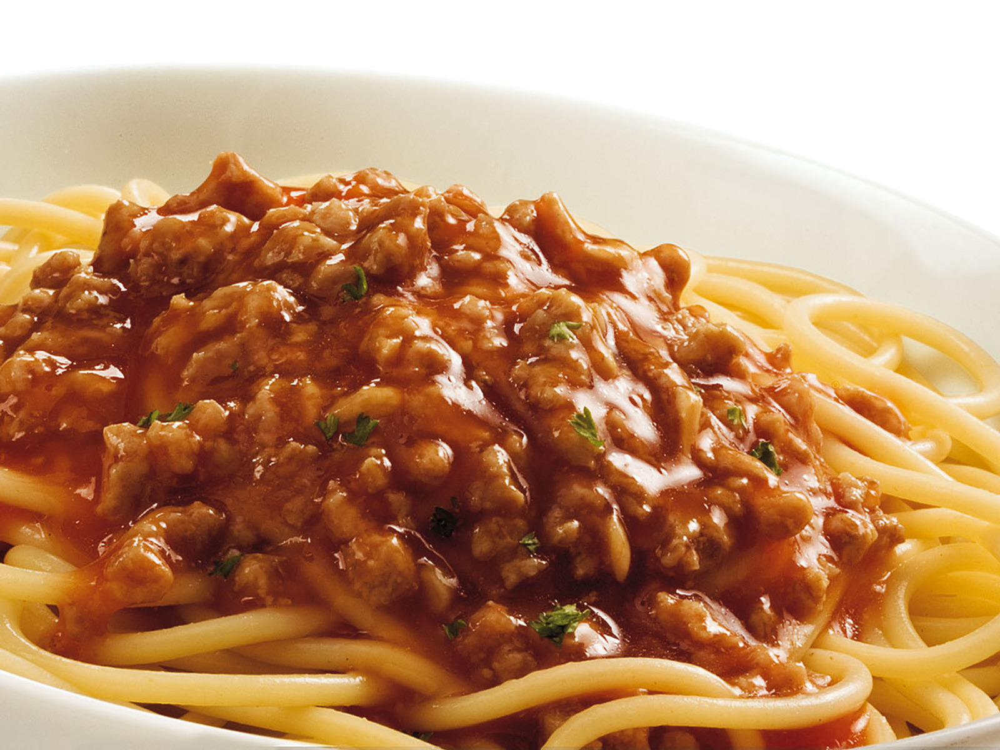

Bolognese
 Description
This meal is pretty easy to make so if you are low on time it is convenient.
This meal has alot of protein because of the meat.
Ingredients
- 4 medium-sized onions
- 4 carrots
- 50g butter
- 100 g bacon
- 1 kg mixed minced meat
- 4 cloves of garlic
- 3 dcl red wine
- 1 liter of mashed tomatoes
- 1 piece of beef stock (pure soup base)
Steps
- To begin, finely chop onions, carrots and bacon into pieces of approx. 3x3 mm.
Melt the butter over medium heat and add sliced vegetables and bacon.
Saute until the onion turns yellow (golden).
- When the onion changes color, add finely chopped or crushed garlic.
Stir a little and add the minced meat.
Add salt to the meat immediately, stirring regularly and breaking it into as small pieces as possible.
- When the meat turns brown (no more pink parts), add red wine and let it cook over low heat until about half of the wine has evaporated (about 10 minutes).
- After half the wine has evaporated, add the mashed tomatoes and the stock or cube.
Stir and cover and let simmer for the next hour on low heat, stirring occasionally.